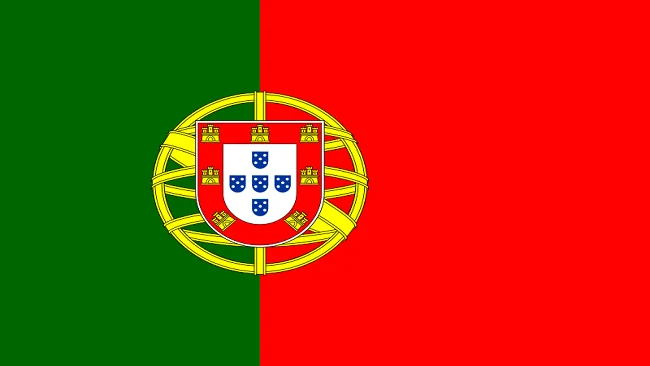
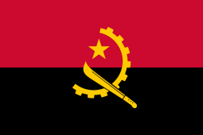
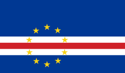
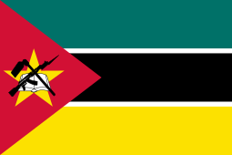

Paises de lingua portuguesa
Portugal
- Lisboa
- Porto
- Braga
- Sintra
- Catolicos
- Protestantes e Evangelica
- Testemunhas de Jeová
- Mórmon
Pricipais pontos Turisticos
O Castelo de Guimarães
Jardim de Santa Bárbara e Santuário Bom Jesus
A Ribeira do Douro
A Universidade de Coimbra
| Capital |
Idioma |
População |
| Lisboa |
Português |
10,33 milhões |
Bandeira de Portugal

Link para acessar wikipedia
Você pode estar acessando o site do wikipedia
Brasil
- Recife
- Fortaleza
- Salvador
- Natal
- Catolicos
- Protestantes e Evangelica
- Espirita
- Ubanda
Pricipais pontos Turisticos
Cristo Redentor
Floresta Amazônica
Lençóis maranhenses
Pelourinho
| Capital |
Idioma |
População |
| Brasilia |
Português |
203 milhões |
Bandeira do Brasil

Link para acessar wikipedia
Você pode estar acessando o site do wikipedia
Angola
- Luanda
- Malanje
- Caxito
- Benguela
- Catolicos
- Protestantes e Evangelica
- Religiões tradicionais africanas
- Muçulmanos
Pricipais pontos Turisticos
Serra da Leba
Fenda da Tundavala
Quedas de água de Kalandula
Deserto de Namibe
| Capital |
Idioma |
População |
| Luanda |
Português |
34,5 milhões |
Bandeira de Angola

Link para acessar wikipedia
Você pode estar acessando o site do wikipedia
Cabo Verde
- Praia
- Mindelo
- Espargos
- Cidade Velha
- Catolicos
- Protestantes e Evangelica
- Muçulmanos
- Testemunhas de Jeová
Pricipais pontos Turisticos
Ilha de sal
Ilha de Santo Antão
Ilha de São Tiago
Viveiro, Botanical Garden & Zoo di Terra
| Capital |
Idioma |
População |
| Praia |
Português |
587.925 mil |
Bandeira de Cabo Verde

Link para acessar wikipedia
Você pode estar acessando o site do wikipedia
Moçambique
- Maputo
- Matola
- Nampula
- Beira
- Protestates
- Catolicos
- Islão
- Sem religiao
Pricipais pontos Turisticos
Arquipélago Quirimbas
Parque Nacional Gorongosa
Vilanculos
Inhambane
| Capital |
Idioma |
População |
| Maputo |
Português |
32,08 milhões |
Bandeira de Moçambique

Link para acessar wikipedia
Você pode estar acessando o site do wikipedia